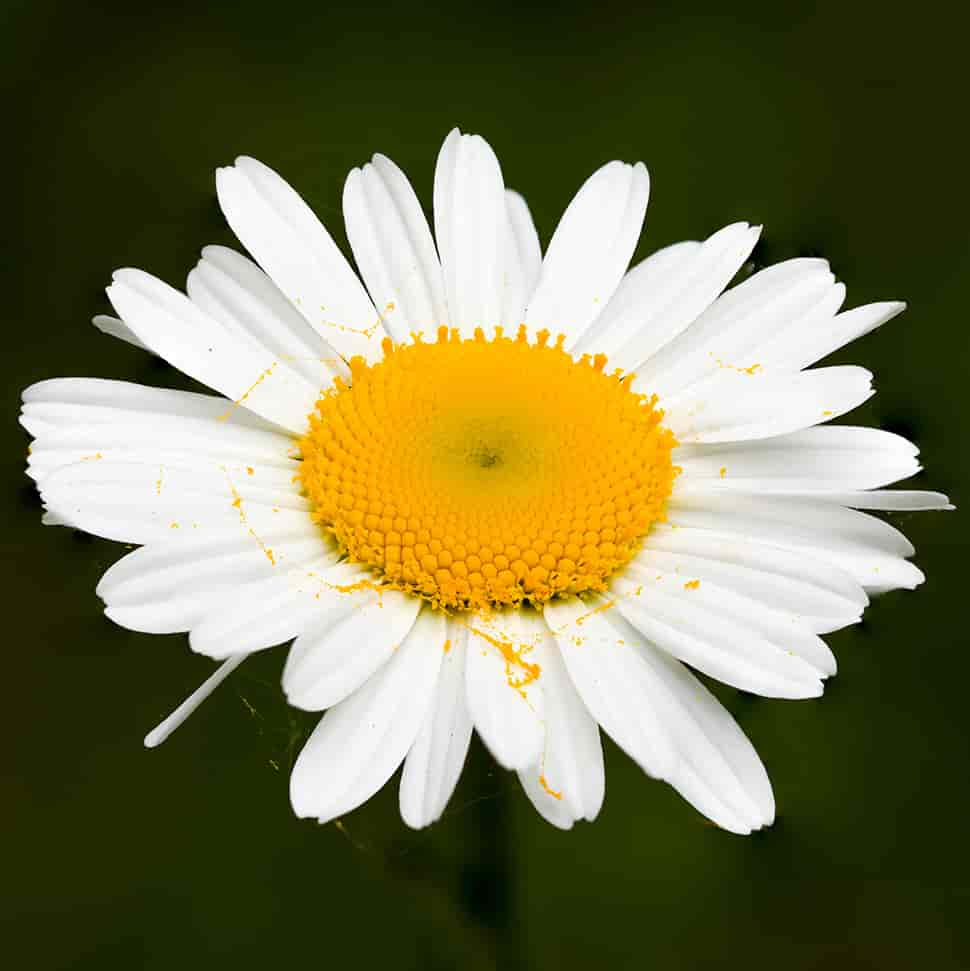
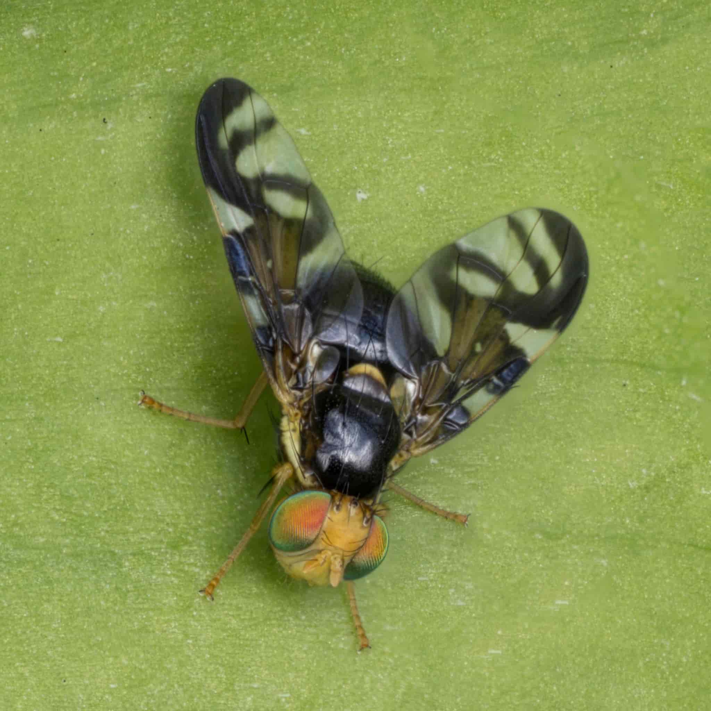
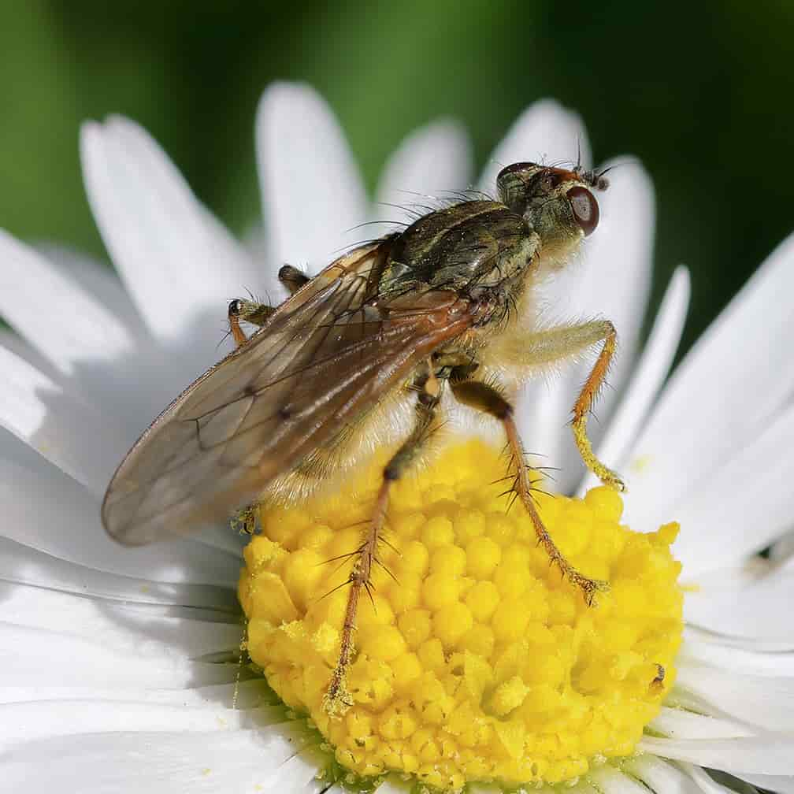
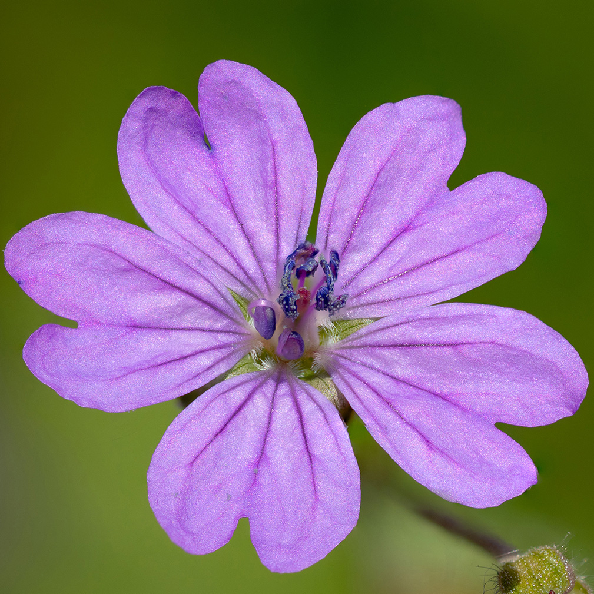
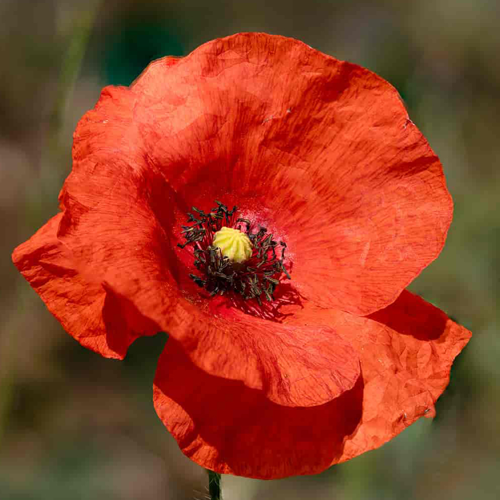
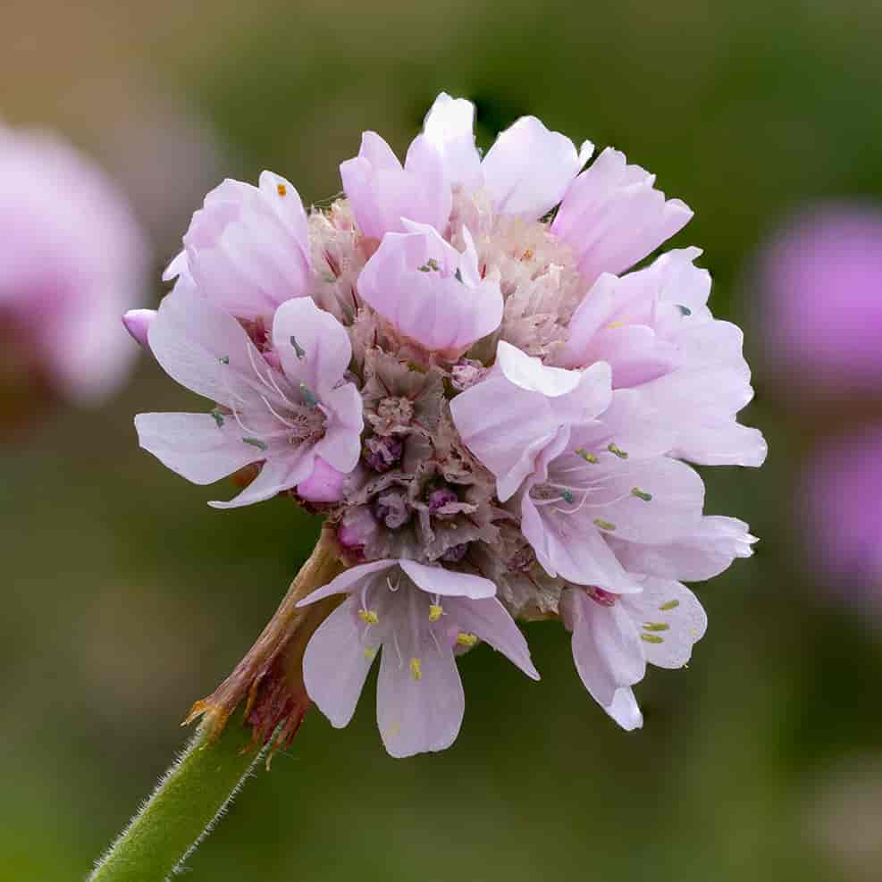

Gallery
Step into a world of delicate textures, hidden details, and tiny moments brought to life. This collection showcases my macro photography of flowers and insects , each image revealing the beauty that often goes unnoticed — the shimmer of a wing, the curve of a petal, the quiet stillness of a creature at rest. Every photograph in this gallery is available to purchase for £50, presented as a high‑quality digital image suitable for printing or display. These pieces are created with care, patience, and a deep appreciation for the small wonders of the natural world. All images are copyright protected. If you wish to use an image commercially, reproduce it, or request a licence, please get in touch to discuss permissions at messagemelody@icloud.com.

The common green bottle fly (Lucilia sericata) is a blowfly found in most areas of the world and is the most well-known of the numerous green bottle fly species. Its body is 10–14 mm (0.39–0.55 in) in length – slightly larger than a house fly – and has brilliant, metallic, blue-green or golden coloration with black markings. I

Leucanthemum vulgare, commonly known as the ox-eye daisy, oxeye daisy, dog daisy, marguerite (French: Marguerite commune, "common marguerite") and other common names, is a widespread flowering plant native to Europe and the temperate regions of Asia, and an introduced plant to North America, Australia and New Zealand.

Urophora cardui or the Canada thistle gall fly is a fruit fly which, contrary to its common name, is indigenous to Central Europe from the United Kingdom east to near the Crimea, and from Sweden south to the Mediterranean.
Scathophaga stercoraria, commonly known as the yellow dung fly or the golden dung fly, is one of the most familiar and abundant flies in many parts of the Northern Hemisphere. As its common name suggests, it is often found on the feces of large mammals, such as horses, cattle, sheep, deer, and wild boar, where it goes to breed. The distribution of S. stercoraria is likely influenced by human agriculture, especially in northern Europe and North America.

Geranium pyrenaicum, otherwise known as hedgerow cranesbill or mountain cranesbill[1] is a perennial species of plant in the family Geraniaceae. It can be found on roadside verges and along hedgerows.

Papaver rhoeas, with common names including common poppy, corn poppy, corn rose, field poppy, Flanders poppy, red poppy, and Odai, is an annual herbaceous species of flowering plant in the poppy family Papaveraceae. It is native to north Africa and temperate Eurasia and is introduced into temperate areas on all other continents except Antarctica.

Armeria is a genus of flowering plants. These plants are sometimes known as lady's cushion, thrift, or sea pink (the latter because as they are often found on coastlines). The genus counts over a hundred species, mostly native to the Mediterranean, although Armeria maritima is an exception, being distributed along the coasts of the Northern Hemisphere, including Ireland, parts of the United Kingdom such as Cornwall, and the Pembrokeshire Coast National Park in Wales.

Geranium sylvaticum, the wood cranesbill or woodland geranium, is a species of hardy flowering plant in the family Geraniaceae, native to Europe and northern Turkey. The Latin specific epithet sylvaticum means "of woodland", referring to the plant's native habitat, as does its common name "wood cranesbill".